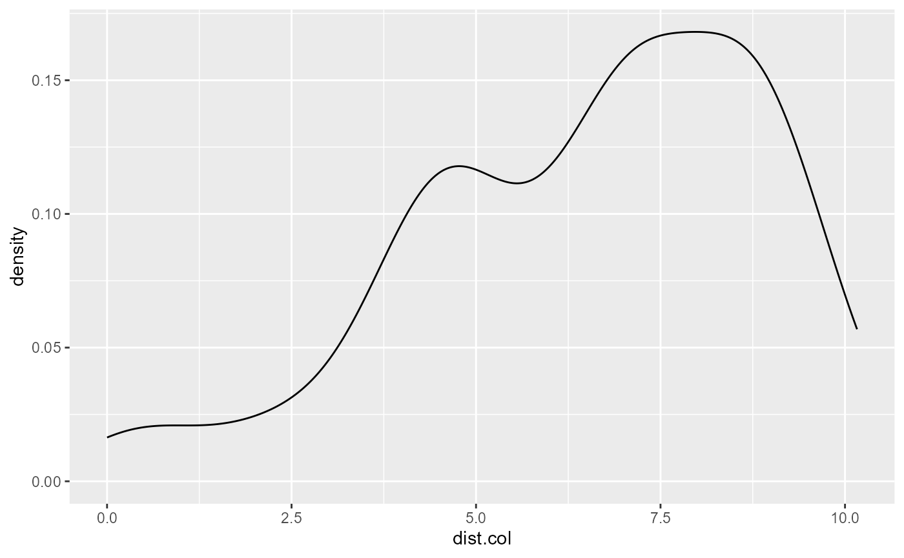
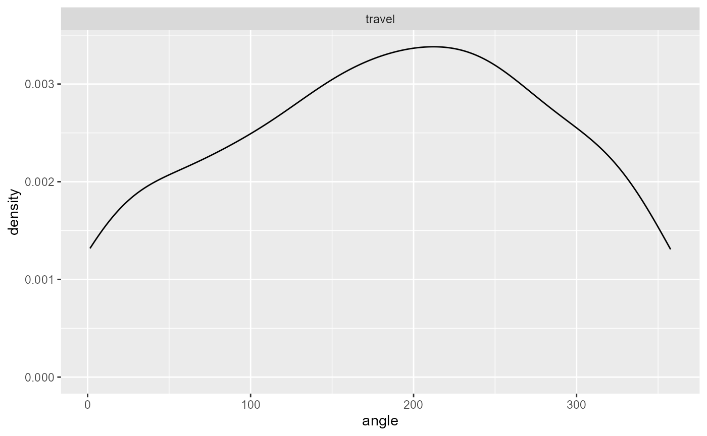
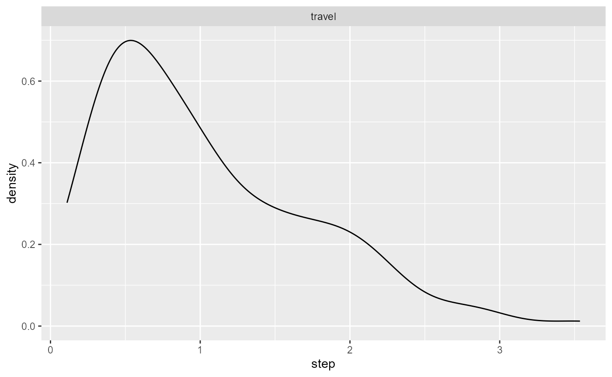
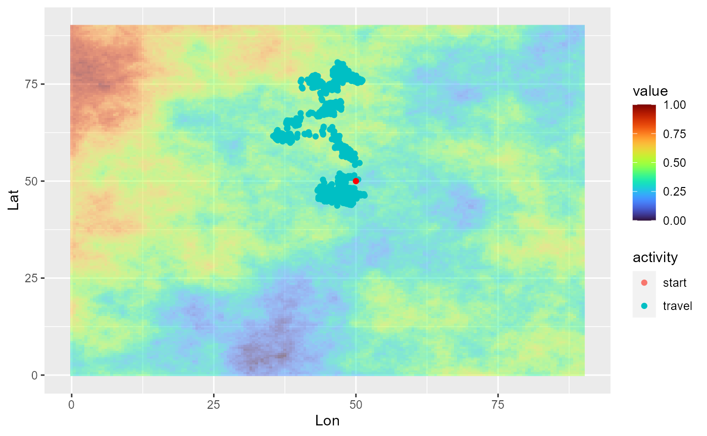
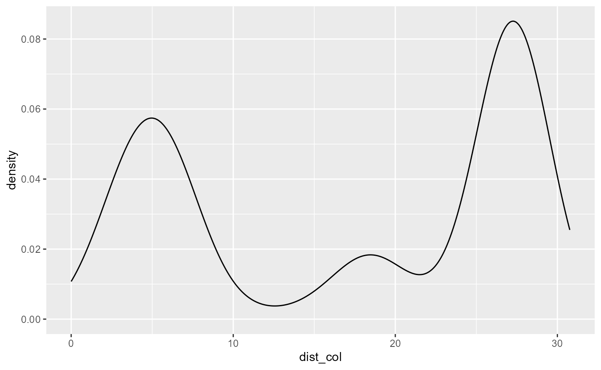
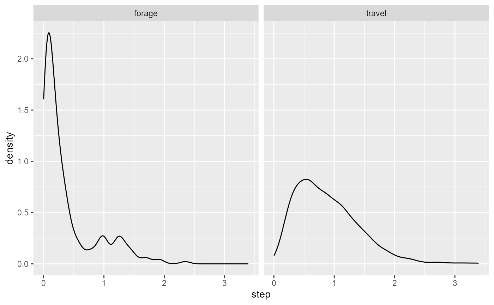

Simulate individual movements
simulate-individual-movements.Rmd
library(simtools)Define potential next positions
potential_position_func() generates a bunch of potential
positions to choose the next step from. Positions are generated based on
provided bearing (Von Mises) and step (Gamma) distributions. For each
position, the value of resource_layer is retrieved as well as the
distance from the colony location.
from <- data.frame(Lon = 1, Lat = 2, toto = 5)
colony_location <- data.frame(Lon = 2, Lat = 5)
cdt <- generate_env_layer(grid = create_grid(), n = 1)$rasters
#> [using unconditional Gaussian simulation]
potential_position_func(n = 10, from = from,
colony_location = colony_location, resource_layer = cdt,
bearing = c(90,10), step = c(4.5, 3))
#> angle step Lon Lat env dist_col
#> 1 124.54851 1.3176841 1.5797831 0.8167237 0.5953956 4.204329
#> 2 38.59724 1.5516632 1.9668066 3.2136489 0.5617013 1.786659
#> 3 317.19460 1.2513320 -0.2442748 2.1327102 0.6177086 3.641170
#> 4 185.32546 0.7604406 0.2398684 2.0216779 0.6177086 3.459547
#> 5 57.06428 0.5626446 1.4894966 2.2774203 0.5421687 2.770028
#> 6 208.31050 0.9354868 1.5323879 2.7692196 0.5329111 2.279264
#> 7 190.77661 3.2482543 -1.1179400 4.4628207 NA 3.163876
#> 8 180.25368 1.2824369 0.5149331 0.8128377 0.6540339 4.442719
#> 9 22.63236 0.2880789 0.7691424 1.8276799 0.5297848 3.402738
#> 10 111.86924 0.8619650 1.2896450 1.1881568 0.5953956 3.877467
#> potential_position_id
#> 1 1
#> 2 2
#> 3 3
#> 4 4
#> 5 5
#> 6 6
#> 7 7
#> 8 8
#> 9 9
#> 10 10Simulate the trajectory of a single central-place forager
simulate_trajectory_CPF() simulates a full foraging
trajectory of an individual departing from its colony. The individual
launches its trip at a given time period (starting_hour, ymd_hms format)
and starts its returning trip either when at a given distance from its
colony (provided with max_dist) or after a given time period
(max_duration). The user can define the bearing and step distributions
for the departing step, but also for the travelling and foraging bouts.
By default, travelling are set to be directed movement patterns (large
steps with low variability, low angles with low variability) and
foraging to be area-restricted movements (short steps with low
variability, large angles with large variability). The user can define
the step duration, that is the time interval at which the positions are
sampled.
For each position, ten potential subsequent positions are randomly
sampled using potential_position_func(), that is with
movement parameters based on the activity the individual is engaged in
at the previous step (travelling or foraging). The environmental
suitability (a raster layer provided with resource_layer) is retrieved
for each potential point based on their geographic coordinates, and
their distance from the colony is computed using the rdist function from
the fields package.
The first four positions of the track after colony departure are randomly selected within the ten potential points sampled as described above, using travelling movement. Afterwards, residence time is checked for every points: residence time is considered reached when a user-defined number of previous positions (as defined with residence_time) fall within the residence_radius. If the residence time is reached, the potential subsequent positions falling outside the residence_radius are extracted, and the next position is sampled as the one of them with the highest environmental suitability. If no potential position falls outside the radius (which can be the case when the radius largely exceeds the steps), the next position is the point situated at the largest distance from the previous position in the track. If the residence time is not reached, the subsequent position is randomly sampled among the four out of ten potential points which have the highest values of environmental suitability. If the environmental suitability exceeds a given threshold (activity_threshold), the individual switches to foraging movements; if not, the individual continues travelling.
When individuals reach the threshold distance to colony (max_dist), or the trip duration exceeds the given duration (max_duration), they start their homeward journey. Potential next positions are sampled using only travelling movement parameters, and the next positions are selected based on the minimum distance to the colony. If several potential positions meet the selection criteria, the next step is randomly sampled within these positions. An individual is considered back when within 0.5 spatial unit (the unit depends on the provided resource layer) from the colony.
library(ggplot2)
library(viridis)
#> Loading required package: viridisLite
library(tidyterra)
#>
#> Attaching package: 'tidyterra'
#> The following object is masked from 'package:stats':
#>
#> filter
library(lubridate)
#>
#> Attaching package: 'lubridate'
#> The following objects are masked from 'package:base':
#>
#> date, intersect, setdiff, union
library(terra)
#> terra 1.7.71
colony_location <- data.frame(Lon = 20, Lat = 20)
cdt <- generate_env_layer(grid = create_grid(), n = 1, seed = 25)
#> [using unconditional Gaussian simulation]
# launch a travel for a duration of 12h
single_traj <- simulate_trajectory_CPF(initial_position = colony_location,
resource_layer = cdt$rasters,
starting_hour = ymd_hms("2022-08-02 06:00:00"),
starting_bearing = c(90,10),
starting_step = c(4.5, 3),
travel_bearing = c(0, 20),
travel_step = c(3, 3),
foraging_bearing = c(0, 0.5),
foraging_step = c(1, 3),
minx = 0, maxx = 90,
miny = 0, maxy = 90,
max_dist = 40,
step_duration = 5,
activity_threshold = 0.70,
max_duration = 720,
residence_radius = 2,
residence_time = 20)
# view the trajectory
ggplot(single_traj) +
geom_spatraster(data = cdt$rasters, alpha = 0.5) +
geom_point(aes(x = Lon, y = Lat, color = activity)) +
geom_point(data = colony_location, aes(x = Lon, y = Lat), col = "red") +
scale_fill_viridis(option = "H") 
# look at the density distribution of distance to colony and movement parameters
ggplot(single_traj) + geom_density(aes(x = dist_col))
ggplot(single_traj |> subset(activity %in% c("forage", "travel"))) +
geom_density(aes(x = angle)) + facet_wrap("activity")
ggplot(single_traj |> subset(activity %in% c("forage", "travel"))) +
geom_density(aes(x = step)) + facet_wrap("activity")
Simulate the trajectory of a non-central place forager
simulate_trajectory_FR() does the same as above, but the
individual is not restrained around its colony and does not perform
homing bout. In addition, the individual starts selecting its next
positions based on environmental conditions (checking for residence
time) at the third step (against 5th step for central-place
foragers).
library(ggplot2)
library(viridis)
library(tidyterra)
library(lubridate)
colony_location <- data.frame(Lon = 50, Lat = 50)
cdt <- generate_env_layer(grid = create_grid(), n = 1, seed = 4)
#> [using unconditional Gaussian simulation]
single_traj <- simulate_trajectory_FR(initial_position = colony_location,
resource_layer = cdt$rasters,
starting_hour = ymd_hms("2022-08-02 06:00:00"),
starting_bearing = c(90,10),
starting_step = c(4.5, 3),
travel_bearing = c(0, 20),
travel_step = c(3, 3),
foraging_bearing = c(0, 0.5),
foraging_step = c(1, 3),
minx = 0, maxx = 90,
miny = 0, maxy = 90,
step_duration = 1,
activity_threshold = 0.7,
max_duration = 2000,
residence_radius = 1,
residence_time = 20)
# view the trajectory
ggplot(single_traj) +
geom_spatraster(data = cdt$rasters, alpha = 0.5) +
geom_point(aes(x = Lon, y = Lat, color = activity)) +
geom_point(data = colony_location, aes(x = Lon, y = Lat), col = "red") +
scale_fill_viridis(option = "H") 
# look at the density distribution of distance to colony and movement parameters
ggplot(single_traj) + geom_density(aes(x = dist_col))
ggplot(single_traj |> subset(activity %in% c("forage", "travel"))) +
geom_density(aes(x = angle)) + facet_wrap("activity")
ggplot(single_traj |> subset(activity %in% c("forage", "travel"))) +
geom_density(aes(x = step)) + facet_wrap("activity")